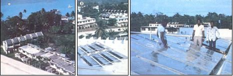
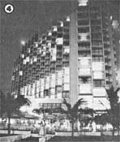

While many "experts" are still claiming that practical solar power is years away, effective energy-saving ( and moneysaving) installations - a number of which are designed by do-it-yourselfers who just won't listen to the gloomy projections of scientific pessimists - are popping up all over the place!
In September of 1979, the Mallards Beach-Hyatt Hotel - in Ocho Rios, Jamaica - went "on line" with the first commercial solar water-heating system on that lovely tropical island.
The very fact that the prestigious hotel decided to enter the "solar age" is interesting, of course . . . but perhaps even more impressive is the story of just how the Hyatt's heating system came to be.
Mr. Eaton Haughton, who holds the position of Special Projects Engineer for Jamaica's National Hotels and Properties group, initiated the project. Haughton admits that he had no real training in solar theory at the time that he approached the hotel management with his idea. He did, however, feel a deep dissatisfaction with the slow rate at which his nation's public and private sectors were moving toward energy conservation . . . and he also had a shade-tree mechanic's knack for gathering information (from magazine articles, photographs, and conversations with solar experts) and then translating the scattered bits of data into real, working equipment.
After making an analysis of the hotel's hot water consumption, Eaton suggested a plan for meeting that demand - a step at a time - with inexpensive, renewable solar energy. The "powers that be" were cautious, he reports, but - after the engineer had proved his point by installing an experimental heater on the roof of one of the hotel's staff cottages - he was given permission to go ahead with the project!
The completed "first step" solar conversion - which supplies hot water to the huge resort's laundry department - cost a total of $20,000. (The financial figures given here are in terms of Jamaican dollars, each - at the time of this writing - worth about 56 cents U.S.)
Eaton originally estimated that the installation would pay for itself in three years. However, with the recent rises in the cost of conventional power sources, Haughton estimates that his small bank of collectors is already saving the establishment at least $12,000 annually. . . which, of course, means that the Hyatt Hotel's solar installation will be supplying "free and clear" energy within less than two years after its completion!
|
 (PHOTOS BY THE STAFF OF THE MOTHER EARTH NEWS; AND COURTESY OF JAMAICA RESORT HOTELS) [LEFT TO RIGHT] The hotel's staff cottages (the experimental heater is on the third roof from the left)... and the Hyatt's water heater ... with Eaton Haughton in the foreground) explaining his system. |
 The Mallards Beach-Hyatt Hotel |
|